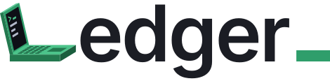

*** Ledger 0.8.0 is out for Windows, macOS and Linux *** Margin Browser Review 1.1.0 for Chrome and Firefox *** New: Margin for GitHub 0.4.0, a GitHub homepage with your own work ***
Ledger_□×
FileEditViewFavoritesToolsHelp

Your thought process, separated from AI.
A desktop app for Windows, macOS and Linux. Think in threads, ask for deliverables, give feedback on them and plan the work, per project.
Threads: one per topic, a timeline of notes, prompts, feedback and uploads.
Deliverables: edit them in the app, publish fixed versions, give feedback on the whole file or on one passage.
Claude Code runs your prompts, and every version records who made it: you or Claude.
Projects with a board, user stories, templates and the people involved.
Plain files: your vault is a folder of markdown files that also opens in Obsidian.
Sync to a private GitHub repository, optionally encrypted (AES-256-GCM).